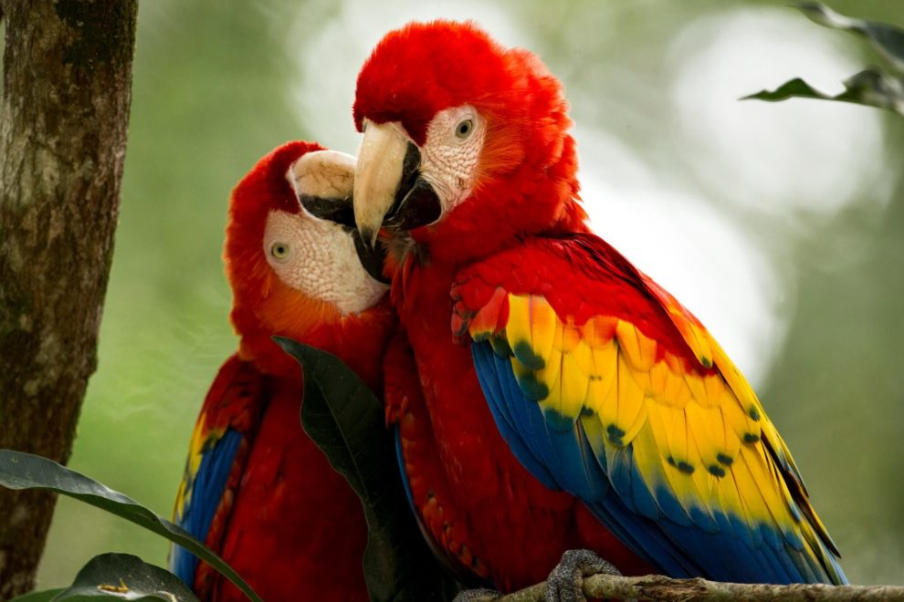
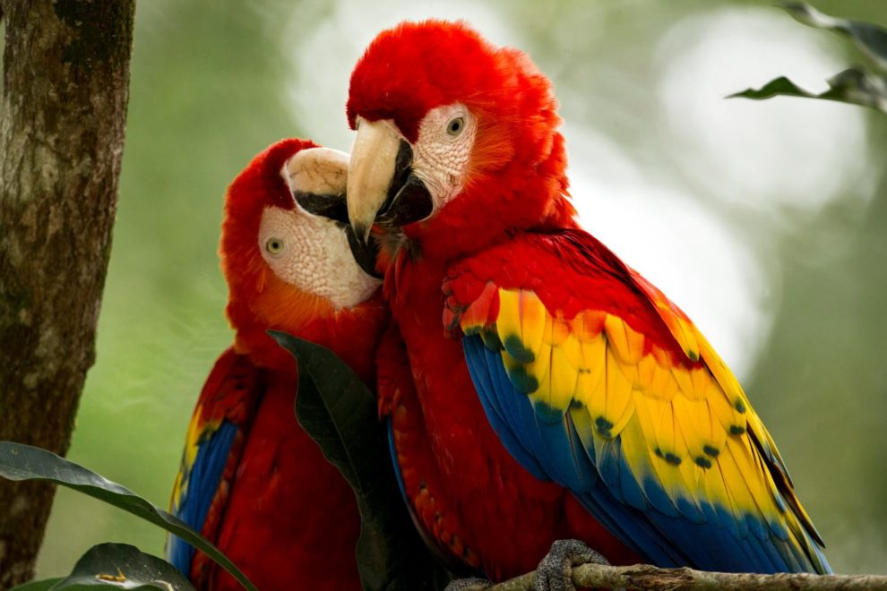

El Ave Nacional de Honduras
.webp) 

La Guacamaya Roja (**Ara macao**) fue declarada Ave Nacional de Honduras el 28 de junio de 1993, reconociendo su belleza, colorido y su estrecha relación con las culturas prehispánicas. Conocida por su plumaje vibrante en tonos rojos, amarillos y azules, esta ave simboliza la libertad, la majestuosidad de la naturaleza y la riqueza de la avifauna hondureña.
Importancia Histórica y Cultural
La guacamaya es un ave de gran valor en la historia precolombina de Honduras, especialmente para la cultura maya. Era considerada un animal sagrado, asociado con el dios del sol y la fertilidad. En sitios arqueológicos como Copán, se han encontrado representaciones y osamentas de estas aves, lo que demuestra su papel fundamental en rituales y ceremonias. Las plumas de la guacamaya eran un bien preciado, utilizado para adornar tocados y vestimentas de la realeza.
- **Herencia Maya:** Para los antiguos mayas, la guacamaya era un ave sagrada, asociada con el sol y la fertilidad, y sus plumas eran usadas en ceremonias y rituales.
- **Inteligencia y Socialización:** Las guacamayas son aves muy inteligentes y sociales. Viven en parejas o en grupos familiares, lo que representa la unión y la comunidad.
- **Conservación:** La protección de la guacamaya y su hábitat es crucial, ya que es una especie en peligro de extinción debido a la deforestación y el tráfico ilegal. Su conservación es un símbolo de nuestro compromiso con el medio ambiente.
Su presencia en los cielos hondureños es un recordatorio de la necesidad de cuidar y preservar nuestros tesoros naturales para que las futuras generaciones puedan disfrutarlos.